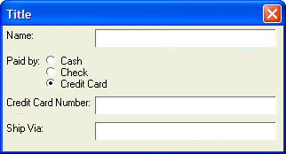

Conditionally Showing Controls
Instead of merely disabling controls, it may be preferable to hide certain controls completely.
Using the {condition} command you can make the display of whole sections of a dialog box conditional on an expression.
The syntax for the command is:
{condition=logical expression} |
If the logical expression returns .T. (TRUE), then the controls following the condition expression will be shown. If the expression returns .F. (FALSE), the controls following the condition statement will be hidden. To turn off conditional display of controls, the command {condition=.t.} can be used.
If the logical expression is FALSE, the space that would have been taken up by the controls that are not displayed is still taken up.
The following script demonstrates this.
payby = 1 ui_dlg_box("Title",<<%dlg% {region=a} Name:|[.40name]; {endregion}; {region} Paid by: (payby={Cash,Check,Credit Card}); {endregion}; {condition=(payby=3)} {region=a} Credit Card Number: |[.40number]; {endregion}; {condition=.t.} {region=a} Ship Via: |[.40ship_via]; {endregion} %dlg%) |
This script produces this dialog when the condition is FALSE:

And, it produces this dialog when the condition is TRUE:

Lesson 4: Conditional Controls
As you can see, when the condition is .F. (FALSE), the space that would have been taken up by the Credit Card Number controls is still taken up.
Other things to notice about the above script are the use of the label in the {region} command ( {region=a} ) which causes the text boxes for name, credit card number and ship via to line up. Also, each of the rows in the dialog is enclosed in {region} {endregion} commands.
The {condition=.t.} command causes the Ship Via' controls to show up regardless of whether the Credit Card Number controls are displayed.
Next
Conditionally Replacing Controls
Limitations
Desktop applications only.